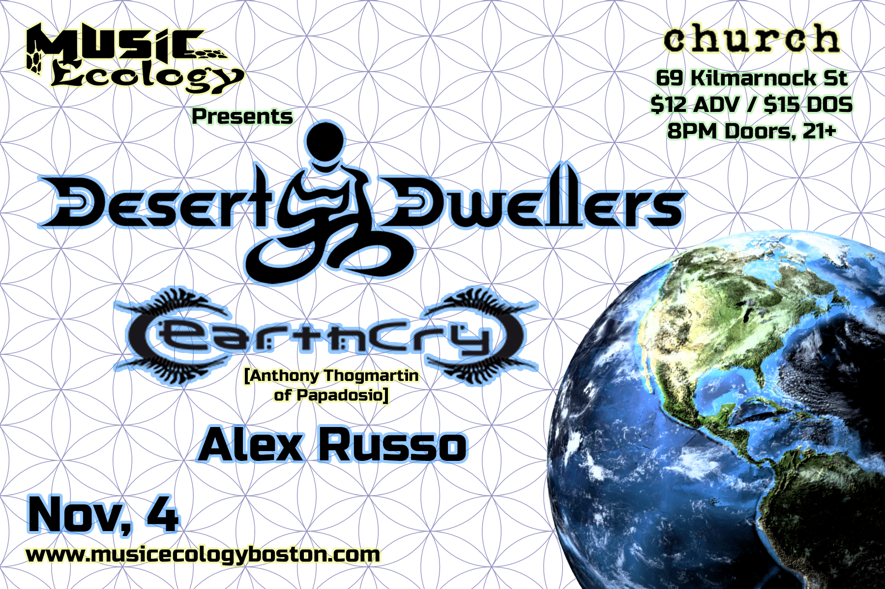
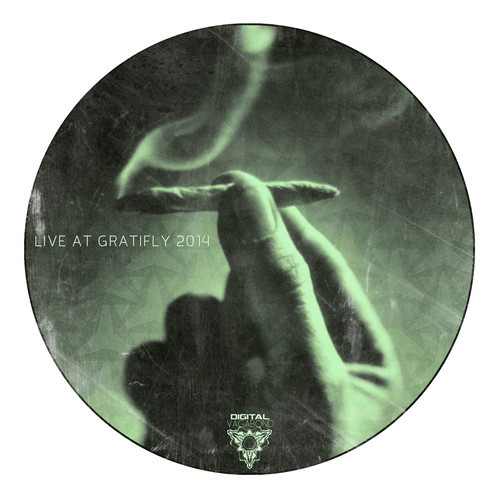

Desert Dwellers & EarthCry at Church November 4!
Posted by: Alex Russo in EarthCry, Events, Shows, desert dwellers 6 years ago

RSVP: https://www.facebook.com/events/403225263165210
Tickets: http://www.ticketfly.com/purchase/event/699059
We're excited to announce the next installment of Music Ecology: Tuesday, November, 4 at Church of Boston in Fenway featuring Desert Dwellers, EarthCry (Anthony ...
Space Jesus x Grateful Dead [FREE DOWNLOAD!]
Posted by: Alex Russo in Grateful Dead, Original Tracks, Remixes, Space Jesus 6 years, 2 months ago
Space Jesus has been putting out a lot of material this year under different monikers including Schlang (with Supersillyus), Hash Money (with GDP), and Snare Jordan - his juke/footwork moniker that easily could have been responsible for this fresh remix ...
[DNB] The Mad Mauritian - Smuggler's Run Mix (FREE DOWNLOAD!)
Posted by: Alex Russo in Blue Boy Productions, Drum and Bass, Mixes, The Mad Mauritian 6 years, 2 months ago

(Cover art by Alyssa Nix)
Today Music Ecology resident and Blue Boy Productions drummer Chris Narainen aka The Mad Mauritian drops his latest mix - an hour of freshie drum and bass for your ear holes. As The Mad Mauritian Chris ...
New video + remix from lespecial!
Posted by: Alex Russo in Live Recording, Original Tracks, Video, lespecial 6 years, 2 months ago
We've been friends with lespecial for about as long as Music Ecology has existed. If memory serves, we booked one of, if not the first lespecial show in Boston, and since then we've seen this band develop and ...
Digital Vagabond Live @ Gratifly 2014 Mix (FREE DOWNLOAD!)
Posted by: Alex Russo in Events, Mixes, Original Tracks, Unreleased Music 6 years, 3 months ago

The second Gratifly festival went down over the weekend in Avalon, South Carolina and a bunch of our friends from Music Ecology were there performing including OPIUO, The Polish Ambassador, Futexture, eelko, and more. From what I hear it was ...
Recent Posts
- Freddy Todd w/ WΦKE & Icculus Boston 9/21
- Together Boston Kicks Off This Sunday 9/23
- Project MUM Somerville Outdoor Party 9/22 FREE
- Learson Peak @ ANNA Wednesday 8/29 (Free Show)
- Space Jesus b2b EPROM this Friday in Brooklyn
Archive
2018
2015
2014
Categories
- Albums (2)
- Allston (1)
- BBP (2)
- Bands (1)
- Blue Boy Productions (4)
- Boston (1)
- Brooklyn (1)
- Cambridge (1)
- Chillout (1)
- DJ Anya (1)
- Drum and Bass (1)
- EPROM (1)
- EarthCry (1)
- Esseks (1)
- Events (6)
- Freddy Todd (1)
- Freddy Todd (1)
- Free Events (2)
- Free downloads (2)
- Glitch Hop (2)
- Glitch Hop (2)
- Grateful Dead (1)
- Huxley Anne (1)
- Icculus (1)
- Jaenga (1)
- Learson Peak (1)
- Live Music (2)
- Live Recording (1)
- Middle East (1)
- Mixes (3)
- New Music (2)
- New York (1)
- Original Tracks (5)
- Outdoors (1)
- Particle (1)
- Remixes (1)
- Schlang (1)
- Shows (7)
- Space Jesus (4)
- Supersillyus (1)
- The Mad Mauritian (2)
- Tiedye Ky (1)
- Trap (1)
- Unreleased Music (1)
- Video (1)
- WΦKE (1)
- desert dwellers (1)
- lespecial (2)
Authors
- Polar Vortex (12)
- Alex Russo (16)
- Alex Russo (6)
Connect